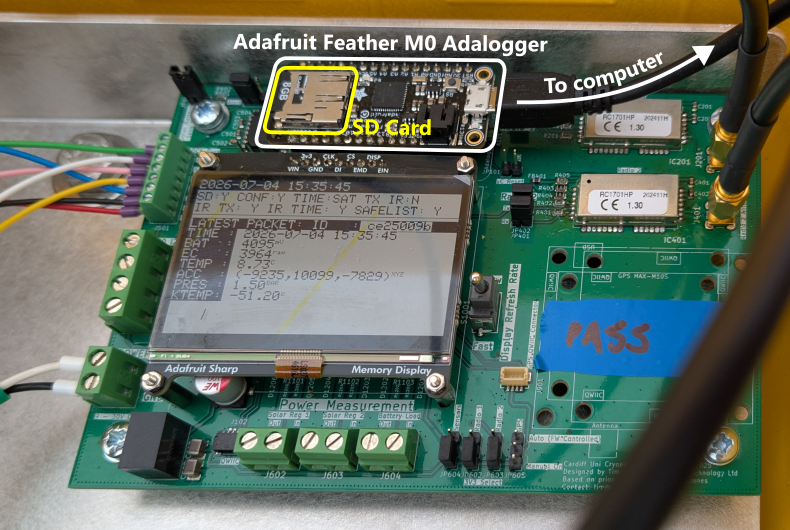
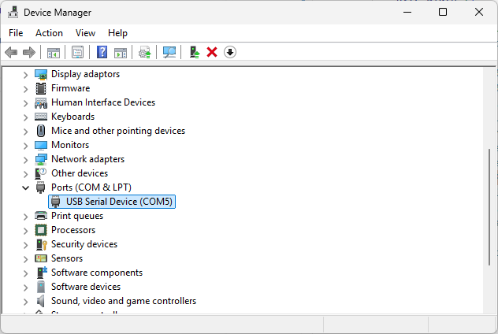
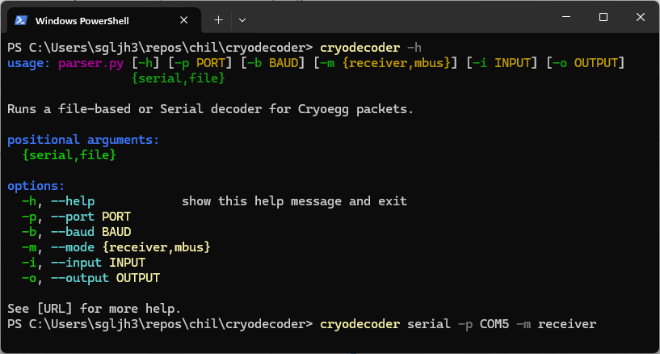
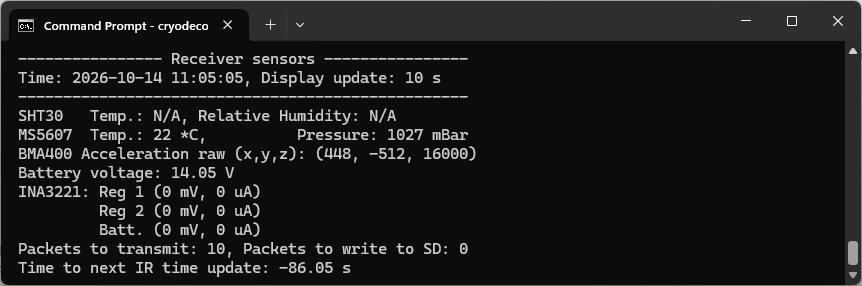
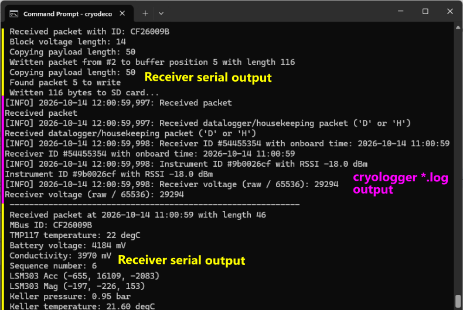
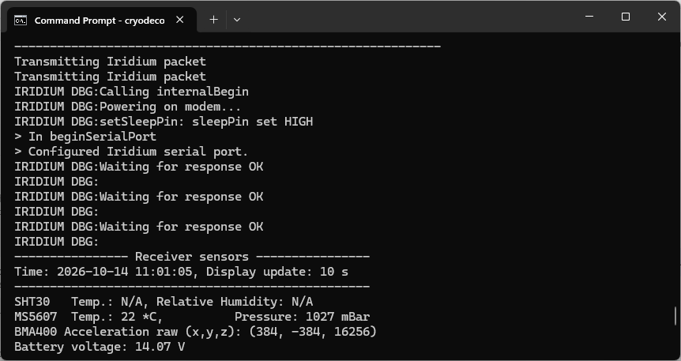

Serial decoding (USB)#
The cryodecoder library decodes and logs packets from CHIL dataloggers connected to a computer via a serial (USB) connection. It runs in a terminal (command line) window and performs the following tasks:
Display real-time updates from the on-board datalogger sensors.
Save raw data from received packets.
Process and save decoded packets from Cryowurst and Cryoegg instruments.
Log status and debugging data from the receiver to a local file.
The rest of this page describes the steps to run the serial decoder and interpet output the command line.
Instructions#
Connect to the datalogger#
Connect your PC to a CHIL datalogger using a USB to USB Micro cable (see Figure 1).

Fig. 1 Adafruit Feather M0 Adalogger USB connection and SD card on CHIL Datalogger PCB.#
On a Windows PC, load the Device Manager (Windows Key + R then enter devmgmt.msc) and identify the Ports (COM & LPT) section (Figure 2). If no other serial devices are connected to your PC, then the datalogger port will be the only one shown in the list. You can check that the COM port address is correct by removing the USB cable and verifying that the entry disappears from the device manager list. Reconnect the USB cable when finished.

Fig. 2 Windows Device Manager to identify COM port address (COM5 in this example).#
Starting cryodecoder#
Important
These instructions assume you have followed the setup instructions If you installed cryodecoder to a virtual environment then make sure it is activated before continuing.
To launch cryodecoder, open a new terminal (command prompt) window. If necessary, locate and activate the virtual environment where you have installed cryodecoder.
Cryodecoder saves data to the a folder named data within the current working directory in the command prompt window. To navigate to a location where you wish to save data, use the cd command:
cd /path/to/my/data
When started, cryodecoder will make a new folder with the current PC timestamp within the data folder. This means that you can use the same data folder for multiple sessions using cryodecoder.
To start the cryodecoder software, enter the following command in the terminal window, replacing COM5 with the name of the COM port you identified earlier. This runs cryodecoder in serial mode and sets COM5 as the port we wish to connect to.
Hint
If you are using one of the Radiocrafts development kit boards, it is possible to decode MBus packets without using a CHIL datalogger by selecting the -m mbus option when starting cryodecoder.
cryodecoder -p COM5 serial
Also shown in Figure 3 is the output from cryodecoder help message which explains the various options that can be provide to the receiver.

Fig. 3 cryodecoder help menu and command to launch in serial mode.#
Using the display#
If you have connected successfully to the datalogger, you will periodically see messages from the receiver which provide updates on the status of the various on-board sensors (Figure 4). Additionally, information is also provided on whether there are still packets in the buffer which remain to be transmitted over the satellite connection or saved to the SD card. A countdown is also provided until the next time at which the receiver time will be updated using the satellite connection.

Fig. 4 Example output from cryodecoder displaying the datalogger environmental sensor values.#
When a packet is received from a CHIL instrument, multiple sources of information are sent to the command line (Figure 5). Some of this originates from the serial debugging output from the datalogger, which is interspersed with the logging output from cryodecoder indicating that a packet has been received.

Fig. 5 cryodecoder command line output when received a packet from Cryowurst.#
Additional output may also appear from the receiver while it is performing operations using the Iridium modem, such as transmitting a packet over the sallite connection (Figure 6).

Fig. 6 cryodecoder command line output showing debugging information related to the Iridium modem.#
Output files#
While the logger is running, it writes to three files in the timestamped directory it created within the data folder. The files serve different purposes and contain the content described below:
logger_YYYYmmdd_HHMMSS.log: logger and messages from the receiver and cryodecoder.raw_YYYYmmdd_HHMMSS.log: raw data transmitted over the serial link as a hexadecimal stream.data_YYYYmmdd_HHMMSS.csv: parsed packet data into a CSV format for quick analysis.
Log file#
The logger_\*.log file contains output from the datalogger that is prefixed with # (the log or comment symbol). Each line is prefixed with a logging level and timestamp which corresponds to the time on the host PC adjusted to UTC.
[INFO] 2026-10-14 12:01:05,971: ---------------- Receiver sensors ----------------
[INFO] 2026-10-14 12:01:06,005: Time: 2026-10-14 11:01:05, Display update: 10 s
[INFO] 2026-10-14 12:01:06,011: --------------------------------------------------
[INFO] 2026-10-14 12:01:06,018: SHT30 Temp.: N/A, Relative Humidity: N/A
The logger_\*.log file provides a record of the receiver messages during the cryodecoder session and can be useful for debugging issues with Iridium connectivity or a quick reference to received packets.
Raw file#
The raw_\*.log file contains a hexadecimal stream of the raw data transmitted by the serial connection during the cryodecoder session. This is different from the *.log file that is stored on the SD card in that is also captures the logging messages sent by the receiver in addition to data packets.
Note
Work is in progress on a utility function in the cryodecoder API to convert raw_\*.log files to the same format as the *.log files stored on the SD card.
CSV file#
The data_\*.csv file contains decoded packet data and raw hexadecimal strings for packets sent over the serial connection. It is described in detail in the next section.